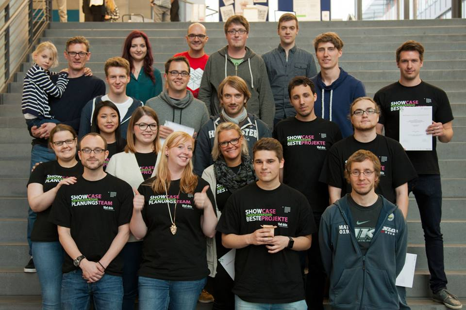
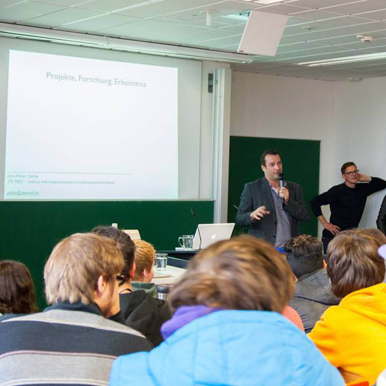
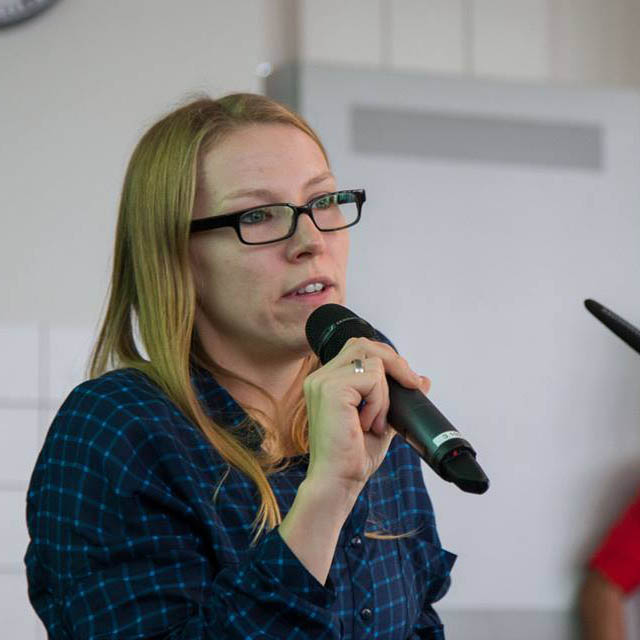
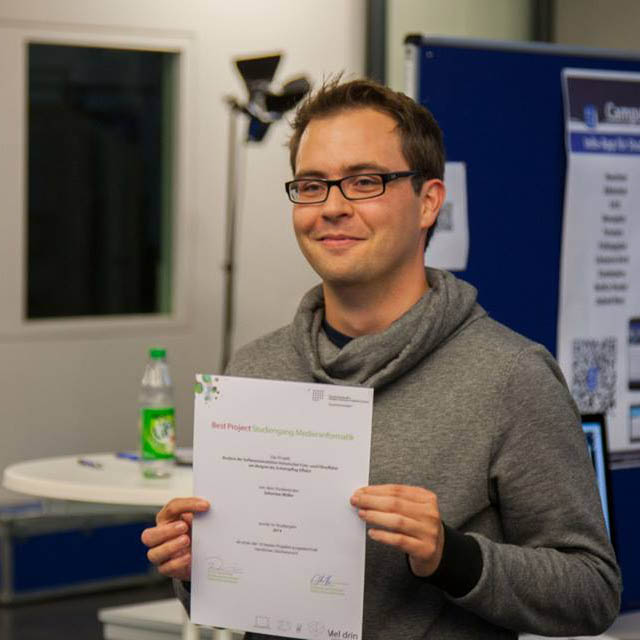
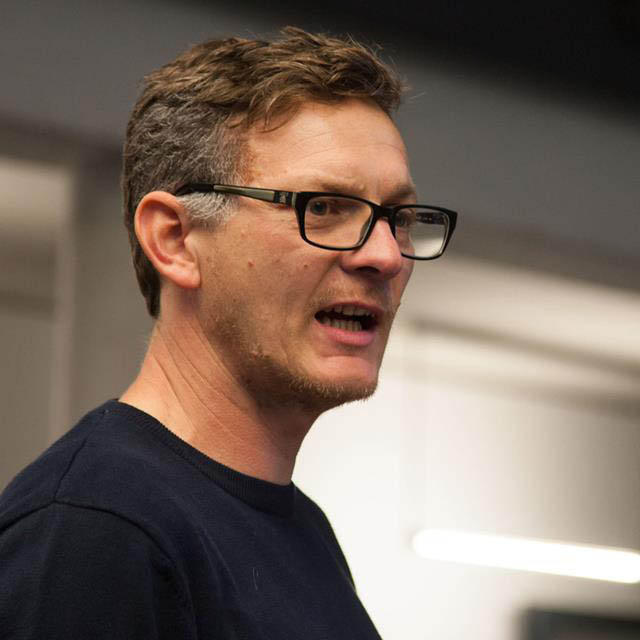
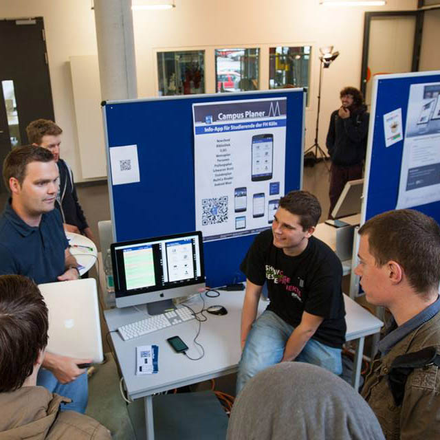
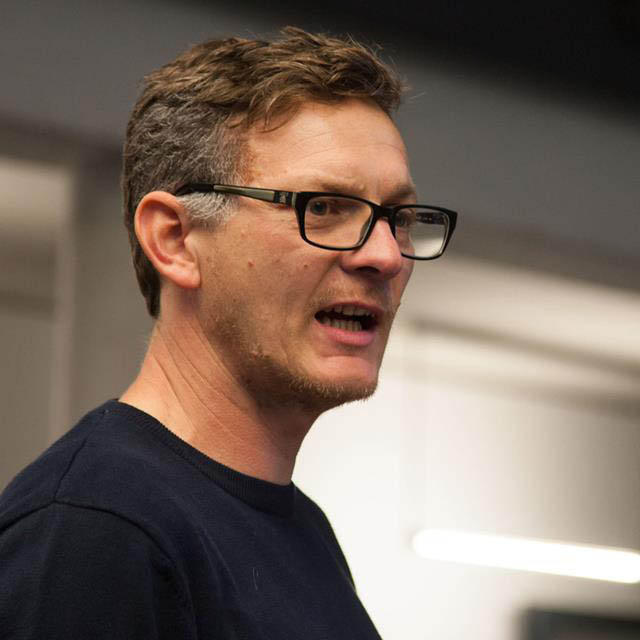
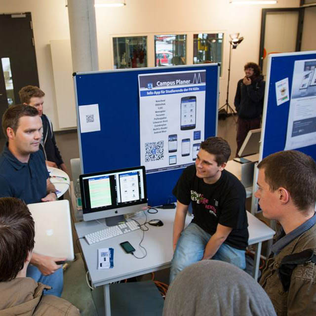
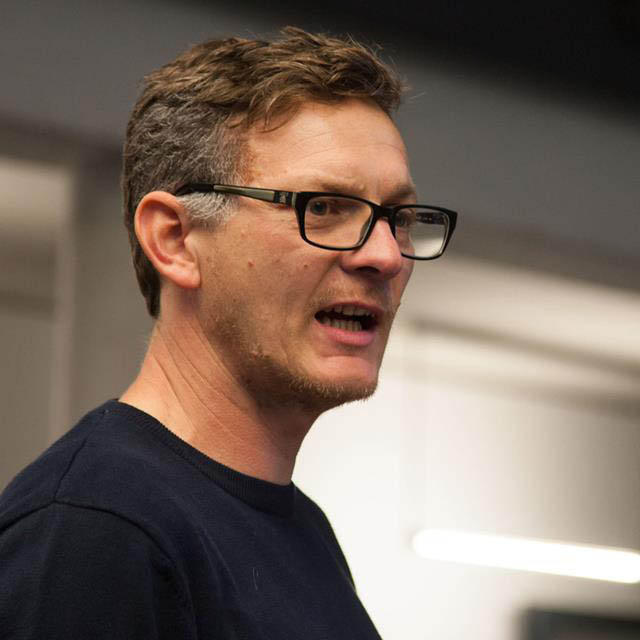
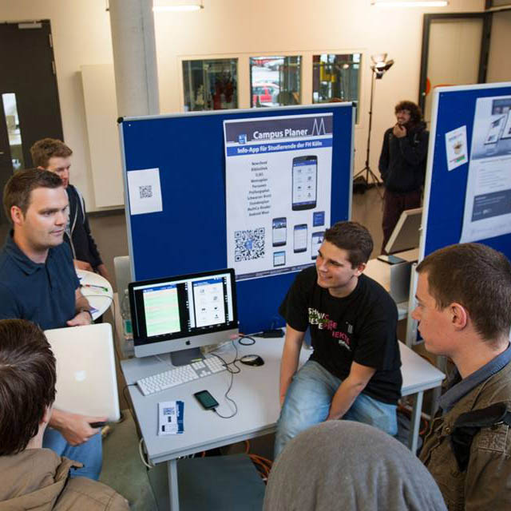

MedieninformatikerInnen sind Fachleute für IT-Prozesse und Systeme, mit denen man medienbasierte Informationen gestalten, produzieren, bearbeiten, verteilen und nutzen kann. Wer Medieninformatik studieren will, sollte möglichst kommunikationsfreudig und kreativ sein, gerne im Team arbeiten und Freude an analytischem und logischem Denken und Handeln haben.
Die durchgängige Digitalisierung textlicher, bildlicher und audiovisueller Medien im Zusammenspiel mit digitalen Kommunikations- und Distributionswegen führt zu unendlich vielen Fragen, Problemen und Möglichkeiten. Auch für die Informatik, insbesondere die Medieninformatik.
Absolventen der Medieninformatik analysieren, entwerfen, realisieren, adaptieren, betreiben und evaluieren informationstechnische, oft web-basierte Prozesse und Systeme zur Gestaltung, Produktion, Bearbeitung, Distribution und Nutzung medienbasierter Informationen. Das Studium der Medieninformatik zielt somit im Kern auf die Vermittlung entsprechender Methoden, Techniken und Denkweisen der Informatik.
Absolventen der Medieninformatik arbeiten jedoch vorwiegend in Teams und müssen dort ihre erworbenen Kompetenzen einbringen können - hier ist Interdisziplinarität gefragt, erwünscht und gefordert. Auch darauf bereitet das Studium der Medieninformatik vor: es vermittelt Sichtweisen und Techniken aus verschiedenen Fachgebieten, von Computergrafik über Mensch-Computer-Interaktion bis Videoproduktion, von Kommunikationsdesign über Programmentwicklung bis Marketing.
Der Bachelor Studiengang Medieninformatik führt zum Abschluss Bachelor of Science und hat eine Regelstudienzeit von sechs Semestern. Im Bachelor-Studium der Medieninformatik werden drei Ziele verfolgt: der Aufbau von Kommunikations- und Methodenkompetenz, die Vermittlung eines umfassenden Technologieverständnisses, das Kennenlernen von Geschäftsprozessen und Kernaktivitäten der Medienwirtschaft.
Statements
Das Faszinierende für mich ist, dass durch den Einsatz von Medien Ergebnisse sichtbar werden. Ich programmiere nicht versteckte Systeme, bei denen ich dann fast gar nicht mehr sehe, was da passiert, sondern habe meist einen visuellen Output, den ich erzeuge. Durch diese „Berührung“ mit den Nutzern von Informationssystemen wird es erforderlich, viele verschiedene Kompetenzen, z.B. Usability, Computergrafik oder Kommunikationstechnologien zu beherrschen und verschiedene Perspektiven einzunehmen.
Durch dieses breite Spektrum eröffnen sich dann viele Möglichkeiten im späteren Berufsleben: das Entwickeln von mobilen Anwendungen, Webseiten, Spielen und multimedialen Diensten ebenso wie die Konzeption und Produktion der Inhalte für verschiedenste Medien. Durch diese Vielseitigkeit wird es nie langweilig.
Wie der Name schon sagt, ist das die Arbeit mit Medien. Dass man fast immer eine visuelle Antwort bekommt, bei dem was man macht, finde ich persönlich wahnsinnig motivierend.
Wenn ich jetzt mit...hmm...ich möchte hier jetzt keine anderen Forschungsgebiete beleidigen...also ich persönlich finde es einfach deutlich motivierender, wenn ich ein schönes ästhetisches Bild als Ergebnis kriege, als wenn lediglich die Zahl "5" auf dem Monitor erscheint. Und das ist ein ganz großer Vorteil der Medieninformatik.
Ausserdem ist es halt auch so, dass man mit dem, was man erlernt, Leuten später eine Freude bereiten kann. Ganz viel, was wir lernen, ist unter anderem für die Entertainment Industrie und ich finde, das ist ein schönes Gefühl, dass das, was man lernt, später von Leuten genutzt wird, um Spaß zu haben und ihr Leben interessant zu gestalten.
Showcase
Die 10 besten Projekte vom Showcase 2014
Wiedermal wurde das neue Studienjahr am Anfang der Vorlesungszeit mit dem Showcase eingeleitet. Nach dem Start durch die Einführungsrede von Prof. Christian Noss, folgten zwei Vorträge von externen Sprechern, die selbst einmal am Campus Gummersbach studiert haben. Es handelte sich zum Einen um Frau Hofmann, welche das Thema FrontEnd-Development behandelte und zum Anderen um Herrn Gehle, welcher über das Leben als IT-Leiter berichtete.
Im Anschluss daran folgte eine Präsentation ausgewählter Filme, die im letzten Jahr in der Veranstaltung Audiovisuelles Medienprojekt 2. Semester, Audiovisuelles Medienprojekt 3. Semester und in WPF's entstanden sind. Dazu wurden zwei Slots angeboten, damit währenddessen die besten Projekte des letzten Studienjahres in einer Ausstellung angesehen und nominiert werden konnten. Am Ende des Tages wurde dann das Team mit der besten Präsentation bzw. dem besten Poster zum Sieger gekürt.

Gruppenfoto aller Beteiligten nach der Siegerehrung





visuelle Eindrücke vom Showcase 2014:
Module im Bachelor
Was sind Module?
Im Studium sprechen wir nicht von Fächern oder Kursen, sondern von Modulen. Jedes Modul hat eine bestimmte Anzahl von ECTS Punkten. Damit wird der Workload des Moduls definiert, also wie viele Stunden ein Student innerhalb der Laufzeit des Moduls in selbiges investieren muss. Ein ECTS-Punkt, oder auch Creditpoint, entspricht 30 Stunden Workload. Somit hat ein Modul mit 5 ECTS Punkten einen Umfang von 150 Stunden Workload.
Studiensemester 1
Modulname
Dozent
ECTS
Algorithmen und Programmierung I
Prof. Dr. Frank Victor
7
Einführung in Betriebssysteme und Rechnerarchitektur
Prof. Dr. Stefan Karsch
5
Mathematik I
Prof. Dr. Wolfgang Konen
5
Theoretische Informatik I
Prof. Dr. Martin Eisemann
5
Einführung in die Medieninformatik
Prof. Dr. Gerhard Hartmann, Prof. Dr. Kristian Fischer, Prof. Hans Kornacher, Prof. Christian Noss, Prof. Dr. Christian Kohls, Prof. Dr. Martin Eisemann
5
Studiensemester 2
Modulname
Dozent
ECTS
Algorithmen und Programmierung II
Prof. Dr. Christian Kohls
7
Einführung in Betriebssysteme und Rechnerarchitektur
Prof. Dr. Stefan Karsch
5
Mathematik I⁄
Prof. Dr. Wolfgang Konen
5
Theoretische Informatik I⁄
Prof. Dr. Martin Eisemann
5
Grundlagen der visuellen Kommunikation
Prof. Christian Noss
5
Audiovisuelles Medienprojekt
Prof. Hans Kornacher
2,5
Dozenten
Dozenten werden geladen
Anfrageformular
Wenn Sie Fragen zum Studiengang Medieninformatik haben, können Sie uns gerne über folgendes Formular kontaktieren.
Neuigkeiten
AVM USB-Sticks
Die abgegebenen USB Sticks können ab jetzt im Verleih wieder abgeholt werden. Dienstags und Mittwochs in der Regel zwischen 9 und 15 Uhr, ansonsten auf Anfrage.
 


